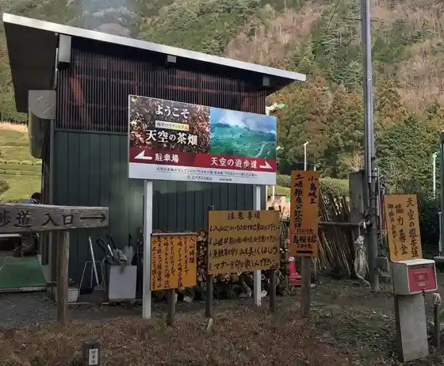
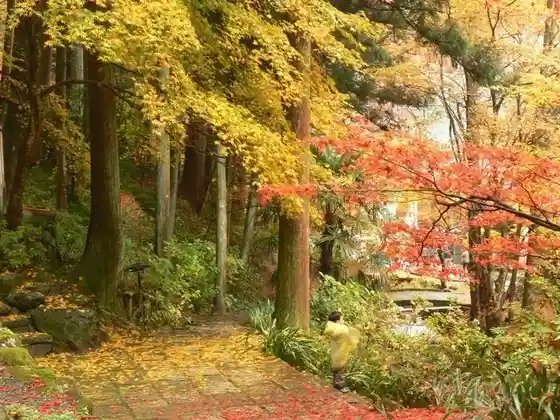

Tenku no Promenade (Gifu no Machupichu)
Ibigawa, Gifu · 0585-57-2111 · Official / source link

Tokuyama Dam
Ibigawa, Gifu · 0585-52-2910 · Official / source link
Ryokai Yama Yoko Kura Tera
Ibigawa, Gifu · 0585-55-2020 · Official / source link

Roadside Station Hoshi no Furu Sato Fujihashi
Ibigawa, Gifu · 0585-52-2020 · Official / source link
Tanigumi Yama Kegon Tera
Ibigawa, Gifu · 0585-55-2020 · Official / source link
Tanigumi Yama Kegon Tera no Autumn Leaves
Ibigawa, Gifu · 0585-22-2111 · Official / source link
Roadside Station Yashagaike no Sato Sakauchi
Ibigawa, Gifu · 0585-53-2262 · Official / source link
Okabe Yana
Ibigawa, Gifu · 0585-55-2253 · Official / source link
Sakauchi Yana Seiryu So
Ibigawa, Gifu · 0585-53-2506 · Official / source link
Kawaguchi Yana
Ibigawa, Gifu · 0585-22-0579 · Official / source link
Roadside Station Yume Sansan Tanigumi
Ibigawa, Gifu · 0585-56-3750 · Official / source link
Koi no Suspension Bridge (Miyayama Hashi)
Ibigawa, Gifu · 0585-22-2111 · Official / source link
Kasuga Morimori Village Rifuresshu Kan
Ibigawa, Gifu · 0585-58-0001 · Official / source link
Sakana Hatsu
Ibigawa, Gifu · 0585-55-2747 · Official / source link
Ibi Kyo no Autumn Leaves
Ibigawa, Gifu · 0585-55-2020 · Official / source link
Tsukiyo Tani Fureai Village
Ibigawa, Gifu · 0585-54-2081 · Official / source link
Kanmuriyama no Autumn Leaves
Ibigawa, Gifu · 0585-22-2111 · Official / source link
Ibi Kogen Kyanpingufiirudo AFUREPPA
Ibigawa, Gifu · 0585-54-2458 · Official / source link
Miwa Shrine
Ibigawa, Gifu · 0585-22-1511 · Official / source link
Fujihashi Kyanpingubesu
Ibigawa, Gifu · 070-1183-8652 · Official / source link
Kasuganotsubone Shusseichi (Kasuganotsubone Park)
Ibigawa, Gifu · Official / source link
Fufu Taki (Ibigawa)
Ibigawa, Gifu · 0585-54-2111 · Official / source link
Mori no Bunka Museum
Ibigawa, Gifu · 0585-58-3111 · Official / source link
Tanigumi Yamato Mae Cherry Blossoms
Ibigawa, Gifu · 0585-55-2020 · Official / source link
Zuigan Tera Kojima Hayamiya no Hi
Ibigawa, Gifu · Official / source link
Ibigawa Folk History Museum
Ibigawa, Gifu · 0585-22-5373 · Official / source link
Choja no Sato Campground
Ibigawa, Gifu · 0585-58-3111 · Official / source link
Ibiden Toyoko Yama Hatsudensho Cherry Blossoms
Ibigawa, Gifu · 0585-52-2020 · Official / source link
Asuka Kawa no Hotaru
Ibigawa, Gifu · 0585-55-2020 · Official / source link
Tanigumi useful village
Ibigawa, Gifu · Official / source link
Ukita Hideie Yukari no Chi
Ibigawa, Gifu · Official / source link
A LAISE CAMP Sumeragi Forest
Ibigawa, Gifu · 0585-56-0021 · Official / source link
Inaba Ittetsu no Haka Gekkei In
Ibigawa, Gifu · Official / source link
Konishi Shrine
Ibigawa, Gifu · Official / source link
Houn Tera (Houn Zendera)
Ibigawa, Gifu · 0585-55-2972 · Official / source link
Katsuragawa no Hotaru
Ibigawa, Gifu · 0585-22-2111 · Official / source link
TEF TANIGUMI
Ibigawa, Gifu · 0585-77-5090 · Official / source link
Ohira Hachi Taki
Ibigawa, Gifu · 0585-57-2111 · Official / source link